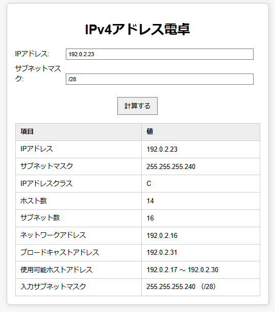

day001
Day001
#1日1ポスト
Google Colab上からOpenAIのAPIを呼び出す。ipywidgetsとSecretを使ってます。しかし、OpenAIのPlaygroundというものがあるそうで不要だったかも。 「100日チャレンジ 毎日連続100本アプリを作ったら人生が変わった」という本の影響を少し受け、気が向いた時に試したことを記録します(ツール、notebook)
day002

Day002
#1日1ポスト
メモ:生成AIに相談して色々やってみるシリーズ。
スマホでみると見切れてるけれど、ブックマークマネージャです。自動で連番を付与しておいて手書きのメモとの連携用に連番をつけてみる…
php1ファイル構成でレンタルサーバーに
撮って出しならぬ、生成って出しに比較的近い。ChatGPTはブクマ追加のみのUIを作ってくれたけれど同じプロンプトをClaudeに入れてみると一覧も出してくれたのでそこからブラッシュアップ。(ツール、Web、サーバサイド有)
day003

Day003
#1日1ポスト
メモ:生成AIに相談して色々やってみるシリーズ。
IPアドレス電卓(IPv4)。何度も相談？するより細部は自分で書くほうが早いかもですが、詳細は妥協すれば一発でこれぐらいのものは出てきます。単一HTMLファイルで動く。
公私ともにこういうツールをAIに量産してもらってみたりしている。(ツール、Web)
day004
Day004
メモ:生成AIに相談して色々やってみるシリーズ.
ハッシュタグつけていたけれど、想定通り1日1ポストできなかったので、タグは外しておく..
完全にクライアントサイドだけで動く（HTML中に突合するべき情報を持っているタイプの）OUIコード確認ツール。(ツール、Web)
day005
Day005
メモ:生成AIに相談して色々やってみるシリーズ.
HTML5で使える部品とか、色々学び直しするための元ネタの一つ。いくつかの要素を指定して作成してもらったもの。メーターで射出するタイプのなにか。(ゲーム)
day006

Day006
メモ:生成AIに相談して色々やってみるシリーズ.
複数の名前付きパイプを統合して何番目のパイプかラベルを付けて出力するツール。merge teeのつもりで仮の名前、同名の違う意味合いの実装もあるそうで、rteeとか、multipipeとか名前がまだぶれている。生成AI一往復でそれなりに動くものが。(ツール、CLI)
day007
Day007
メモ:生成AIに相談して色々やってみるシリーズ.
HTML5のシンプルな電卓。Bigint的な別の言語の実装を見せてDecimal.jsを紹介してもらう他、CSSやHTMLも四則演算のパーサーも一緒に生成してもらって、細部だけ手直し。
手動でやったのは← （ BackSpaceキー ）など追加したりキー配列とか。(ツール、Web)
day008
Day008
メモ:生成AIに相談して色々やってみるシリーズ.
迫ってくる円を慣性がついた三角形が避けるゲーム。高校生の時(30年近く前)にN88-BASIC(86)で作ったものの移植。当時の当たり判定は確かPOINT命令(指定座標の色の確認)。お願いするだけで作ってもらえそうだけど時短やら気持ちの問題で少し自分でも書く(ゲーム、Web)
day009

Day009
メモ:生成AIに相談して色々やってみるシリーズ
と言いつつ、生成AIが勝手に作ってくれた..
Claude 3.7 Sonnet （非推論モード）に、作成手順を確認しようと思って相談したところ「実装」までしてくれた...pdf-libとFileSaver.jsを利用しており、クライアントサイドだけで、PDFを連結できる。（動くぞ）(ツール、Web)
day010

Day010
メモ:生成AIに相談して色々やってみるシリーズ.
1ファイルのみのテキストファイル編集用エディタ。
生成AIに作ってもらったものの手直しをスマホでやるとき用。ルータのnvram、flashromのように、保存領域を1世代だけ持つことができて、diffが取れる。(ツール、Web)
day011

Day011
メモ:生成AIに相談して色々やってみるシリーズ.
どんな環境で何をやってたら必要になるのかという疑問はあるかもだけれど、ファイル名を変換してダウンロードするだけのクライアントサイドJavaScriptを入れたhtml1ファイル構成。ほとんど生成してもらったまま細部だけ昨日のエディタで手直し。(ツール、Web)
day012
Day012
メモ:生成AIに相談して色々やってみるシリーズ.
TODO管理アプリ.
頻出のお題のため、欲しい機能全部入りでも生成できるかと思ったけれど、少し複雑な仕様だと無料版AIだと色々難しい。試行錯誤の末、1行もコードを編集せずにそこそこのものができた。そのかわりプロンプトは、かなり書き直している…(ツール、Web)
day013
Day013
メモ:生成AIに相談して色々やってみるシリーズ.
Calendar.txtというものを知ったので、入力表示を支援する1ファイルのHTMLで実装する、というのをかなりの範囲でAIに作ってもらう。言葉でお願いすると色々作ったり教えてくれたりしてくれるものの誤解なく伝わるように書く、って人相手と一緒だなと。(ツール、Web)
day014
Day014
メモ:生成AIに相談して色々やってみるシリーズ.
文字数、単語数を数えるアプリの作成.
TinySegmenterというライブラリを利用させてもらうことで欲しかったものができた。APIを呼び出すときにはAPIなりの数え方があるけれど自分の中の目安として一定の数え方が簡単にできればと.
このシリーズも14番目(ツール、Web)
day015
Day015
メモ:生成AIに相談して色々やってみるシリーズ.
必要に迫られて？ちょいと使う用途のdiffツール。本当は別のものを作っている途中で必要になり、少し改良したもの。サンプル文章も生成AIに作ってもらった。
day016

Day016
メモ:生成AIに相談して色々やってみるシリーズ.
PWAアプリとしてスマホに配置して、ブラウザやXアプリの共有から渡した情報をサーバ側にJSONとして保存してみる。アプリのインストール画面とファイル構成.